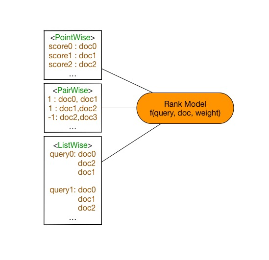

排序学习(Learning To Rank)
排序学习(Learning To Rank)
排序学习技术[1]是构建排序模型的机器学习方法，在信息检索、自然语言处理，数据挖掘等机器学场景中具有重要作用。排序学习的主要目的是对给定一组文档，对任意查询请求给出反映相关性的文档排序。在本例子中，利用标注过的语料库训练两种经典排序模型RankNet[4]和LamdaRank[6]，分别可以生成对应的排序模型，能够对任意查询请求，给出相关性文档排序。
RankNet模型在命令行输入：
python ranknet.py
LambdaRank模型在命令行输入：
python lambda_rank.py
用户只需要使用以上命令就完成排序模型的训练和预测，程序会自动下载内置数据集，无需手动下载。
背景介绍
排序学习技术随着互联网的快速增长而受到越来越多关注，是机器学习中的常见任务之一。一方面人工排序规则不能处理海量规模的候选数据，另一方面无法为不同渠道的候选数据给于合适的权重，因此排序学习在日常生活中应用非常广泛。排序学习起源于信息检索领域，目前仍然是许多信息检索场景中的核心模块，例如搜索引擎搜索结果排序，推荐系统候选集排序，在线广告排序等等。本例以文档检索任务阐述排序学习模型。
图1. 排序模型在文档检索的典型应用搜索引擎中的作用
假定有一组文档$S$，文档检索任务是依据和请求的相关性，给出文档排列顺序。查询引擎根据查询请求，排序模型会给每个文档打出分数，依据打分情况倒序排列文档，得到查询结果。在训练模型时，给定一条查询，并给出对应的文档最佳排序和得分。在预测时候，给出查询请求，排序模型生成文档排序。常见的排序学习方法划分为以下三类：
-
Pointwise 方法
Pointwise方法是通过近似为回归问题解决排序问题，输入的单条样本为得分-文档，将每个查询-文档对的相关性得分作为实数分数或者序数分数，使得单个查询-文档对作为样本点(Pointwise的由来)，训练排序模型。预测时候对于指定输入，给出查询-文档对的相关性得分。
-
Pairwise方法
Pairwise方法是通过近似为分类问题解决排序问题，输入的单条样本为标签-文档对。对于一次查询的多个结果文档，组合任意两个文档形成文档对作为输入样本。即学习一个二分类器，对输入的一对文档对AB（Pairwise的由来），根据A相关性是否比B好，二分类器给出分类标签1或0。对所有文档对进行分类，就可以得到一组偏序关系，从而构造文档全集的排序关系。该类方法的原理是对给定的文档全集$S$，降低排序中的逆序文档对的个数来降低排序错误，从而达到优化排序结果的目的。
-
Listwise方法
Listwise方法是直接优化排序列表，输入为单条样本为一个文档排列。通过构造合适的度量函数衡量当前文档排序和最优排序差值，优化度量函数得到排序模型。由于度量函数很多具有非连续性的性质，优化困难。

图2. 排序模型三类方法
实验数据
本例中的实验数据采用了排序学习中的基准数据LETOR语料库，部分来自于Gov2网站的查询请求结果，包含了约1700条查询请求结果文档列表，并对文档相关性做出了人工标注。其中，一条查询含有唯一的查询id，对应于多个具有相关性的文档，构成了一次查询请求结果文档列表。每个文档由一个一维数组的特征向量表示，并对应一个人工标注与查询的相关性分数。
本例在第一次运行的时会自动下载LETOR MQ2007数据集并缓存，无需手动下载。
mq2007数据集分别提供了三种类型排序模型的生成格式，需要指定生成格式format
例如调用接口
pairwise_train_dataset = functools.partial(paddle.dataset.mq2007.train, format="pairwise")
for label, left_doc, right_doc in pairwise_train_dataset():
...
模型概览
对于排序模型，本例中提供了Pairwise方法的模型RankNet和Listwise方法的模型LambdaRank，分别代表了两类学习方法。Pointwise方法的排序模型退化为回归问题，请参考PaddleBook中推荐系统一课。
RankNet排序模型
RankNet是一种经典的Pairwise的排序学习方法，是典型的前向神经网络排序模型。在文档集合$S$中的第$i$个文档记做$U_i$，它的文档特征向量记做$x_i$，对于给定的一个文档对$U_i$, $U_j$，RankNet将输入的单个文档特征向量$x$映射到$f(x)$，得到$s_i=f(x_i)$, $s_j=f(x_j)$。将$U_i$相关性比$U_j$好的概率记做$P_{i,j}$，则
由于排序度量函数大多数非连续，非光滑，因此RankNet需要一个可以优化的度量函数$C$。首先使用交叉熵作为度量函数衡量预测代价，将损失函数$C$记做
其中$\bar{P_{i,j}}$代表真实概率，记做
而$S_{i,j}$ = {+1,0}，表示$U_i$和$U_j$组成的Pair的标签，即Ui相关性是否好于$U_j$。
最终得到了可求导的度量损失函数
可以使用常规的梯度下降方法进行优化。细节见RankNet
同时，得到文档$U_i$在排序优化过程的梯度信息为
表示的含义是本轮排序优化过程中文档$U_i$的上升或者下降量。
根据以上推论构造RankNet网络结构，由若干层隐藏层和全连接层构成，如图所示，将文档特征使用隐藏层，全连接层逐层变换，完成了底层特征空间到高层特征空间的变换。其中docA和docB结构对称，分别输入到最终的RankCost层中。

图3. RankNet网络结构示意图
- 全连接层(fully connected layer) : 指上一层中的每个节点都连接到下层网络。本例子中同样使用
paddle.layer.fc实现，注意输入到RankCost层的全连接层维度为1。 - RankCost层： RankCost层是排序网络RankNet的核心，度量docA相关性是否比docB好，给出预测值并和label比较。使用了交叉熵(cross enctropy)作为度量损失函数，使用梯度下降方法进行优化。细节可见RankNet[4]。
由于Pairwise中的网络结构是左右对称，可定义一半网络结构，另一半共享网络参数。在PaddlePaddle中允许网络结构中共享连接，具有相同名字的参数将会共享参数。使用PaddlePaddle实现RankNet排序模型，定义网络结构的示例代码如下：
import paddle.v2 as paddle
def half_ranknet(name_prefix, input_dim):
"""
parameter with a same name will be shared in PaddlePaddle framework,
these parameters in ranknet can be used in shared state, e.g. left network and right network in detail
https://github.com/PaddlePaddle/Paddle/blob/develop/doc/design/api.md
"""
# data layer
data = paddle.layer.data(name_prefix+"/data", paddle.data_type.dense_vector(input_dim))
# fully connect layer
hd1 = paddle.layer.fc(
input=data,
size=10,
act=paddle.activation.Tanh(),
param_attr=paddle.attr.Param(initial_std=0.01, name="hidden_w1"))
# fully connected layer/ output layer
output = paddle.layer.fc(
input=hd1,
size=1,
act=paddle.activation.Linear(),
param_attr=paddle.attr.Param(initial_std=0.01, name="output"))
return output
def ranknet(input_dim):
# label layer
label = paddle.layer.data("label", paddle.data_type.integer_value(1))
# reuse the parameter in half_ranknet
output_left = half_ranknet("left", input_dim)
output_right = half_ranknet("right", input_dim)
# rankcost layer
cost = paddle.layer.rank_cost(name="cost", left=output_left, right=output_right, label=label)
return cost
上述结构中使用了和图3相同的模型结构：两层隐藏层，分别是hidden_size=10的全连接层和hidden_size=1的全连接层。本例中的input_dim指输入单个文档的特征的维度，label取值为1，0。每条输入样本为<label>，<docA, docB>的结构，以docA为例，输入input_dim的文档特征，依次变换成10维，1维特征，最终输入到RankCost层中，比较docA和docB在RankCost输出得到预测值。
RankNet模型训练
RankNet的训练只需要运行命令：
python ranknet.py
将会自动下载数据，训练RankNet模型，并将每个轮次的模型参数存储下来。
RankNet模型预测
本例提供了rankNet模型的训练和预测两个部分。完成训练后的模型分为拓扑结构(需要注意rank_cost不是模型拓扑结构的一部分)和模型参数文件两部分。在本例子中复用了ranknet训练时的模型拓扑结构half_ranknet，模型参数从外存中加载。模型预测的输入为单个文档的特征向量，模型会给出相关性得分。将预测得分排序即可得到最终的文档相关性排序结果。
用户自定义RankNet数据
上述的代码使用了PaddlePaddle内置的排序数据，如果希望使用自定义格式数据，可以参考PaddlePaddle内置的mq2007数据集，编写一个新的生成器函数。例如输入数据为如下格式，只包含doc0-doc2三个文档。
<query_id> <relevance_score> <feature_vector>的格式(featureid: feature_value)
query_id : 1, relevance_score:1, feature_vector 0:0.1, 1:0.2, 2:0.4 #doc0
query_id : 1, relevance_score:2, feature_vector 0:0.3, 1:0.1, 2:0.4 #doc1
query_id : 1, relevance_score:0, feature_vector 0:0.2, 1:0.4, 2:0.1 #doc2
query_id : 2, relevance_score:0, feature_vector 0:0.1, 1:0.4, 2:0.1 #doc0
.....
需要将输入样本转换为Pairwise的输入格式，例如组合生成格式与mq2007 Pairwise格式相同的结构
<label> <docA_feature_vector><docB_feature_vector>
1 doc1 doc0
1 doc1 doc2
1 doc0 doc2
....
注意，一般在Pairwise格式的数据中，label=1表示docA和查询的相关性好于docB，事实上label信息隐含在docA和docB组合pair中。如果存在0 docA docB，交换顺序构造1 docB docA即可。
另外组合所有的pair会有训练数据冗余，因为可以从部分偏序关系恢复文档集上的全序关系。相关研究见PairWise approach[5]，本例不予赘述。
# a customized data generator
def gen_pairwise_data(text_line_of_data):
"""
return :
------
label : np.array, shape=(1)
docA_feature_vector : np.array, shape=(1, feature_dimension)
docA_feature_vector : np.array, shape=(1, feature_dimension)
"""
return label, docA_feature_vector, docB_feature_vector
对应于paddle的输入中，integer_value为单个整数，dense_vector为实数一维向量，与生成器对应，需要在训练模型之前指明输入数据对应关系。
# Define the input data order
feeding = { "label":0,
"left/data" :1,
"right/data":2}
LambdaRank排序模型
LambdaRank[6)]是Listwise的排序方法，是Bugers[6]等人从RankNet发展而来，使用构造lambda函数(LambdaRank名字的由来)的方法优化度量标准NDCG(Normalized Discounted Cumulative Gain)，每个查询后得到的结果文档列表都单独作为一个训练样本。NDCG是信息论中很衡量文档列表排序质量的标准之一，前$K$个文档的NDCG得分记做
| 前文中RankNet中推导出，文档排序需要的是排序错误的梯度信息。NDCG度量函数是非光滑，非连续的，不能直接求得梯度信息，因此将 | delta(NDCG) | = | NDCG(new) - NDCG(old) | 引入，构造lambda函数为 |
替换RankNet中的梯度表示，得到的排序模型称为LambdaRank
由以上推导可知，LambdaRank网络结构和RankNet结构非常相似。如图所示

图4. LambdaRank的网络结构示意图
一个查询得到的结果文档列表作为一条样本输入到网络中，替换RankCost为LambdaCost层，其他结构与RankNet相同。
- LambdaCost层 : LambdaCost层使用NDCG差值作为Lambda函数，score是一个一维的序列，对于单调训练样本全连接层输出的是1x1的序列，二者的序列长度都等于该条查询得到的文档数量。Lambda函数的构造详细见LambdaRank
使用PaddlePaddle定义LambdaRank网络结构的示例代码如下：
import paddle.v2 as paddle
def lambda_rank(input_dim):
"""
lambda_rank is a ListWise Rank Model, input data and label must be sequence
https://papers.nips.cc/paper/2971-learning-to-rank-with-nonsmooth-cost-functions.pdf
parameters :
input_dim, one document's dense feature vector dimension
dense_vector_sequence format
[[f, ...], [f, ...], ...], f is represent for an float or int number
"""
label = paddle.layer.data("label",
paddle.data_type.dense_vector_sequence(1))
data = paddle.layer.data("data",
paddle.data_type.dense_vector_sequence(input_dim))
# hidden layer
hd1 = paddle.layer.fc(
input=data,
size=10,
act=paddle.activation.Tanh(),
param_attr=paddle.attr.Param(initial_std=0.01))
output = paddle.layer.fc(
input=hd1,
size=1,
act=paddle.activation.Linear(),
param_attr=paddle.attr.Param(initial_std=0.01))
# cost layer
cost = paddle.layer.lambda_cost(
input=output, score=label, NDCG_num=6, max_sort_size=-1)
return cost, output
上述结构中使用了和图3相同的模型结构。和RankNet相似，分别使用了hidden_size=10和hidden_size=1的两个全连接层。本例中的input_dim指输入单个文档的特征的维度。每条输入样本为label，<docA, docB>的结构，以docA为例，输入input_dim的文档特征，依次变换成10维，1维特征，最终输入到LambdaCost层中。需要注意这里的label和data格式为dense_vector_sequence，表示一列文档得分或者文档特征组成的序列。
LambdaRank模型训练
训练LambdaRank模型只需要运行命令：
python lambda_rank.py
脚本会自动下载数据，训练LambdaRank模型，并将每个轮次的模型存储下来。
LambdaRank模型预测
LambdaRank模型预测过程和RankNet相同。预测时的模型拓扑结构复用代码中的模型定义，从外存加载对应的参数文件。预测时的输入是文档列表，输出是该文档列表的各个文档相关性打分，根据打分对文档进行重新排序，即可得到最终的文档排序结果。
自定义 LambdaRank数据
上面的代码使用了PaddlePaddle内置的mq2007数据，如果希望使用自定义格式数据，可以参考PaddlePaddle内置的mq2007数据集，编写一个生成器函数。例如输入数据为如下格式，只包含doc0-doc2三个文档。
<query_id> <relevance_score> <feature_vector>的格式
query_id : 1, relevance_score:1, feature_vector 0:0.1, 1:0.2, 2:0.4 #doc0
query_id : 1, relevance_score:2, feature_vector 0:0.3, 1:0.1, 2:0.4 #doc1
query_id : 1, relevance_score:0, feature_vector 0:0.2, 1:0.4, 2:0.1 #doc2
query_id : 2, relevance_score:0, feature_vector 0:0.1, 1:0.4, 2:0.1 #doc0
query_id : 2, relevance_score:2, feature_vector 0:0.1, 1:0.4, 2:0.1 #doc1
.....
需要转换为Listwise格式，例如